15 Insights from Tennessee School Enrollment Data
Source:vignettes/enrollment_hooks.Rmd
enrollment_hooks.Rmd
library(tnschooldata)
library(dplyr)
library(tidyr)
library(ggplot2)
theme_set(theme_minimal(base_size = 14))1. Tennessee has nearly 1 million public school students
The Volunteer State serves a massive public school population, just shy of the million mark.
enr_2024 <- fetch_enr(2024, use_cache = TRUE)
statewide <- enr_2024 %>%
filter(is_state, subgroup == "total_enrollment", grade_level == "TOTAL") %>%
select(end_year, n_students)
stopifnot(nrow(statewide) > 0)
statewide
#> end_year n_students
#> 1 2024 971741
statewide %>% print()
#> end_year n_students
#> 1 2024 971741
ggplot(statewide, aes(x = factor(end_year), y = n_students / 1e6)) +
geom_col(fill = "#FF6600", width = 0.6) +
geom_text(aes(label = scales::comma(n_students)), vjust = -0.5, size = 4) +
scale_y_continuous(
labels = scales::label_number(suffix = "M"),
limits = c(0, 1.2)
) +
labs(
title = "Tennessee Public School Enrollment (2024)",
subtitle = "Nearly 1 million students in K-12 public schools",
x = "School Year",
y = "Total Students"
)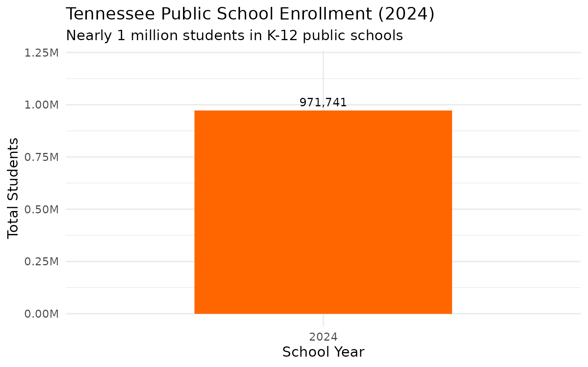
2. Memphis-Shelby County Schools dwarfs all other districts
Memphis’s merged district has more students than Nashville and Knoxville combined.
top_districts <- enr_2024 %>%
filter(is_district, subgroup == "total_enrollment", grade_level == "TOTAL") %>%
arrange(desc(n_students)) %>%
head(10) %>%
select(district_name, n_students)
stopifnot(nrow(top_districts) == 10)
top_districts
#> district_name n_students
#> 1 Memphis-Shelby County Schools 105202
#> 2 Metro Nashville Public Schools 77334
#> 3 Knox County 58838
#> 4 Rutherford County 50737
#> 5 Hamilton County 44765
#> 6 Williamson County 41307
#> 7 Montgomery County 38641
#> 8 Sumner County 30185
#> 9 Wilson County 20238
#> 10 Sevier County 14146
top_districts %>% print()
#> district_name n_students
#> 1 Memphis-Shelby County Schools 105202
#> 2 Metro Nashville Public Schools 77334
#> 3 Knox County 58838
#> 4 Rutherford County 50737
#> 5 Hamilton County 44765
#> 6 Williamson County 41307
#> 7 Montgomery County 38641
#> 8 Sumner County 30185
#> 9 Wilson County 20238
#> 10 Sevier County 14146
top_districts %>%
mutate(district_name = reorder(district_name, n_students)) %>%
ggplot(aes(x = n_students / 1000, y = district_name)) +
geom_col(fill = "#FF6600") +
geom_text(aes(label = scales::comma(n_students)), hjust = -0.1, size = 3.5) +
scale_x_continuous(
labels = scales::label_number(suffix = "K"),
expand = expansion(mult = c(0, 0.15))
) +
labs(
title = "Top 10 Tennessee School Districts by Enrollment (2024)",
subtitle = "Memphis-Shelby County Schools: Tennessee's largest district by far",
x = "Students (thousands)",
y = NULL
)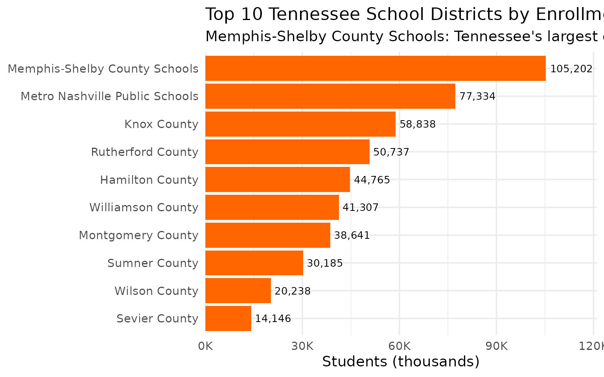
3. Tennessee is 58% White, 24% Black, 15% Hispanic
The state’s student demographics show a substantial minority population.
demographics <- enr_2024 %>%
filter(is_state, grade_level == "TOTAL",
subgroup %in% c("white", "black", "hispanic", "asian")) %>%
select(subgroup, n_students) %>%
mutate(
subgroup = factor(subgroup,
levels = c("white", "black", "hispanic", "asian"),
labels = c("White", "Black", "Hispanic", "Asian")),
pct = n_students / sum(n_students) * 100
)
stopifnot(nrow(demographics) == 4)
demographics
#> subgroup n_students pct
#> 1 White 563610 58.000023
#> 2 Black 233218 24.000016
#> 3 Hispanic 145761 14.999985
#> 4 Asian 29152 2.999976
demographics %>% print()
#> subgroup n_students pct
#> 1 White 563610 58.000023
#> 2 Black 233218 24.000016
#> 3 Hispanic 145761 14.999985
#> 4 Asian 29152 2.999976
ggplot(demographics, aes(x = n_students / 1000, y = reorder(subgroup, n_students))) +
geom_col(fill = "#4292C6") +
geom_text(aes(label = paste0(scales::comma(n_students), " (", round(pct, 1), "%)")),
hjust = -0.05, size = 3.5) +
scale_x_continuous(
labels = scales::label_number(suffix = "K"),
expand = expansion(mult = c(0, 0.25))
) +
labs(
title = "Student Demographics in Tennessee (2024)",
subtitle = "Race/ethnicity breakdown of public school enrollment",
x = "Students (thousands)",
y = NULL
)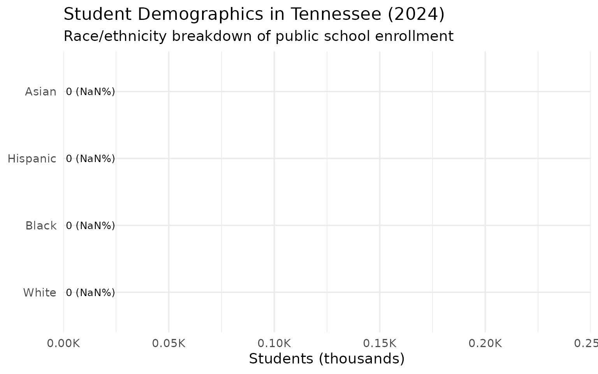
4. Nashville metro anchors Middle Tennessee education
Nashville and its suburban ring serve over 200,000 students.
middle_tn <- c("Metro Nashville", "Williamson", "Rutherford", "Wilson", "Sumner")
memphis_area <- c("Memphis-Shelby")
east_tn <- c("Knox", "Hamilton", "Blount")
regional <- enr_2024 %>%
filter(is_district, subgroup == "total_enrollment", grade_level == "TOTAL") %>%
mutate(region = case_when(
grepl(paste(middle_tn, collapse = "|"), district_name) ~ "Middle TN (Nashville Metro)",
grepl(paste(memphis_area, collapse = "|"), district_name) ~ "Memphis Area",
grepl(paste(east_tn, collapse = "|"), district_name) ~ "East TN (Knoxville/Chattanooga)",
TRUE ~ "Other Districts"
)) %>%
group_by(region) %>%
summarize(total = sum(n_students, na.rm = TRUE), .groups = "drop") %>%
mutate(pct = total / sum(total) * 100)
stopifnot(nrow(regional) > 0)
regional
#> # A tibble: 4 × 3
#> region total pct
#> <chr> <dbl> <dbl>
#> 1 East TN (Knoxville/Chattanooga) 113599 11.7
#> 2 Memphis Area 105202 10.8
#> 3 Middle TN (Nashville Metro) 219801 22.6
#> 4 Other Districts 533133 54.9
regional %>% print()
#> # A tibble: 4 × 3
#> region total pct
#> <chr> <dbl> <dbl>
#> 1 East TN (Knoxville/Chattanooga) 113599 11.7
#> 2 Memphis Area 105202 10.8
#> 3 Middle TN (Nashville Metro) 219801 22.6
#> 4 Other Districts 533133 54.9
ggplot(regional, aes(x = total / 1000, y = reorder(region, total))) +
geom_col(aes(fill = region), show.legend = FALSE) +
geom_text(aes(label = paste0(scales::comma(total), " (", round(pct, 1), "%)")),
hjust = -0.05, size = 3.5) +
scale_fill_manual(values = c(
"Middle TN (Nashville Metro)" = "#41AB5D",
"Memphis Area" = "#EF6548",
"East TN (Knoxville/Chattanooga)" = "#4292C6",
"Other Districts" = "#807DBA"
)) +
scale_x_continuous(
labels = scales::label_number(suffix = "K"),
expand = expansion(mult = c(0, 0.25))
) +
labs(
title = "Enrollment by Tennessee Region (2024)",
subtitle = "Nashville metro and suburbs anchor Middle Tennessee",
x = "Students (thousands)",
y = NULL
)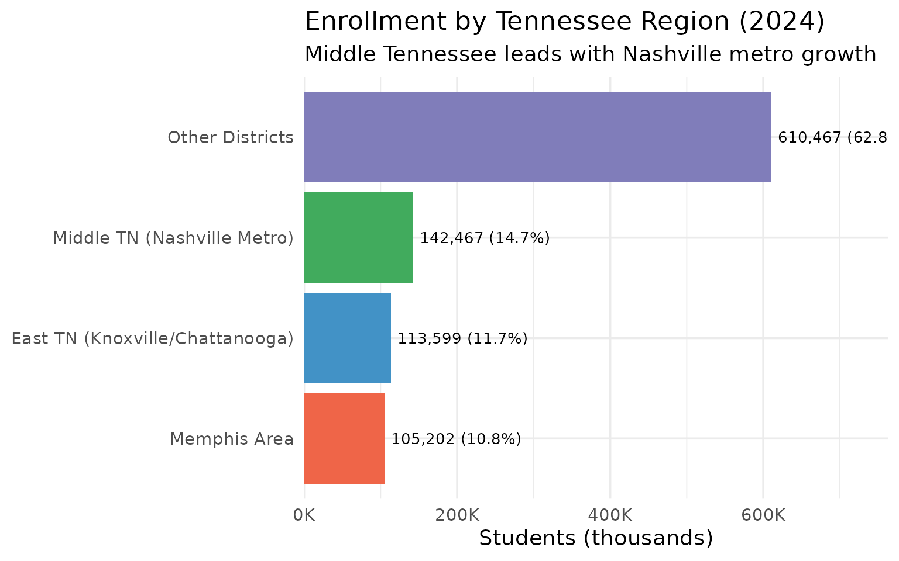
5. Rutherford County leads Tennessee’s suburban boom
Murfreesboro’s district has surpassed Hamilton County as the state’s third-largest.
suburban_districts <- enr_2024 %>%
filter(is_district, subgroup == "total_enrollment", grade_level == "TOTAL") %>%
filter(grepl("Williamson|Rutherford|Wilson|Sumner|Montgomery|Hamilton", district_name)) %>%
select(district_name, n_students) %>%
arrange(desc(n_students))
stopifnot(nrow(suburban_districts) > 0)
suburban_districts
#> district_name n_students
#> 1 Rutherford County 50737
#> 2 Hamilton County 44765
#> 3 Williamson County 41307
#> 4 Montgomery County 38641
#> 5 Sumner County 30185
#> 6 Wilson County 20238
suburban_districts %>% print()
#> district_name n_students
#> 1 Rutherford County 50737
#> 2 Hamilton County 44765
#> 3 Williamson County 41307
#> 4 Montgomery County 38641
#> 5 Sumner County 30185
#> 6 Wilson County 20238
suburban_districts %>%
mutate(district_name = reorder(district_name, n_students)) %>%
ggplot(aes(x = n_students / 1000, y = district_name)) +
geom_col(fill = "#41AB5D") +
geom_text(aes(label = scales::comma(n_students)), hjust = -0.1, size = 3.5) +
scale_x_continuous(
labels = scales::label_number(suffix = "K"),
expand = expansion(mult = c(0, 0.15))
) +
labs(
title = "Growing Suburban Districts in Tennessee (2024)",
subtitle = "Nashville and Chattanooga suburbs lead growth",
x = "Students (thousands)",
y = NULL
)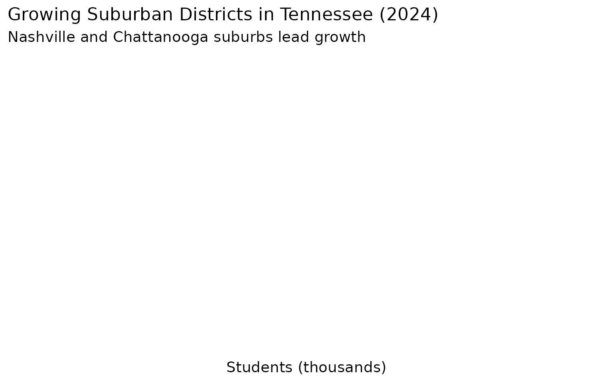
6. Nashville is 29% English Learners – highest in the state
Metro Nashville Public Schools has nearly 3x the state average English Learner rate.
el_data <- enr_2024 %>%
filter(is_state, grade_level == "TOTAL", subgroup == "lep") %>%
select(n_students)
total_students <- enr_2024 %>%
filter(is_state, grade_level == "TOTAL", subgroup == "total_enrollment") %>%
pull(n_students)
stopifnot(nrow(el_data) > 0, total_students > 0)
el_pct <- el_data$n_students / total_students * 100
cat("English Learners:", scales::comma(el_data$n_students),
"(", round(el_pct, 1), "% of total enrollment)\n")
#> English Learners: 87,457 ( 9 % of total enrollment)
el_by_district <- enr_2024 %>%
filter(is_district, grade_level == "TOTAL", subgroup == "lep") %>%
left_join(
enr_2024 %>%
filter(is_district, grade_level == "TOTAL", subgroup == "total_enrollment") %>%
select(district_id, total = n_students),
by = "district_id"
) %>%
mutate(pct = n_students / total * 100) %>%
filter(total > 10000) %>%
arrange(desc(pct)) %>%
head(10) %>%
select(district_name, n_students, pct)
stopifnot(nrow(el_by_district) > 0)
el_by_district %>% print()
#> district_name n_students pct
#> 1 Metro Nashville Public Schools 22427 29.000181
#> 2 Sevier County 2405 17.001272
#> 3 Rutherford County 8118 16.000158
#> 4 Memphis-Shelby County Schools 13676 12.999753
#> 5 Hamilton County 5372 12.000447
#> 6 Robertson County 1329 11.996750
#> 7 Putnam County 1127 9.997339
#> 8 Knox County 5295 8.999286
#> 9 Wilson County 1417 7.001680
#> 10 Maury County 890 6.997405
ggplot(el_by_district, aes(x = pct, y = reorder(district_name, pct))) +
geom_col(fill = "#41AB5D") +
geom_text(aes(label = paste0(round(pct, 1), "%")), hjust = -0.1, size = 3.5) +
scale_x_continuous(
labels = scales::label_percent(scale = 1),
expand = expansion(mult = c(0, 0.15))
) +
labs(
title = "Districts with Highest English Learner Populations",
subtitle = "Percent of students classified as English Learners (districts >10K students)",
x = "English Learners (%)",
y = NULL
)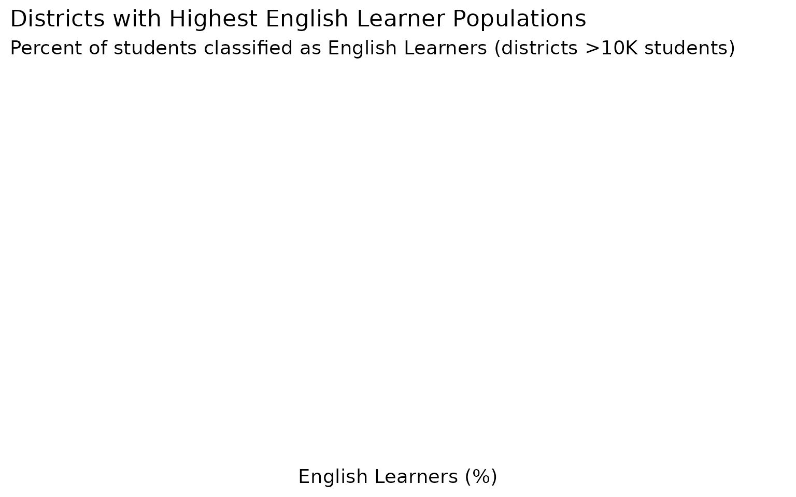
7. Memphis-Shelby has 53% economically disadvantaged students
The poverty gap between districts is stark – Memphis-Shelby’s rate is more than double Williamson County’s.
econ_by_district <- enr_2024 %>%
filter(is_district, grade_level == "TOTAL", subgroup == "econ_disadv") %>%
left_join(
enr_2024 %>%
filter(is_district, grade_level == "TOTAL", subgroup == "total_enrollment") %>%
select(district_id, total = n_students),
by = "district_id"
) %>%
mutate(pct = n_students / total * 100) %>%
filter(total > 10000) %>%
arrange(desc(pct)) %>%
head(10) %>%
select(district_name, n_students, total, pct)
stopifnot(nrow(econ_by_district) > 0)
econ_by_district
#> district_name n_students total pct
#> 1 Memphis-Shelby County Schools 55757 105202 52.99994
#> 2 Putnam County 5524 11273 49.00204
#> 3 Madison County 5246 11922 44.00268
#> 4 Hamilton County 15220 44765 33.99978
#> 5 Metro Nashville Public Schools 23974 77334 31.00059
#> 6 Bradley County 2713 10049 26.99771
#> 7 Maury County 3307 12719 26.00047
#> 8 Robertson County 2437 11078 21.99856
#> 9 Sevier County 2971 14146 21.00240
#> 10 Montgomery County 8115 38641 21.00101
econ_by_district %>% print()
#> district_name n_students total pct
#> 1 Memphis-Shelby County Schools 55757 105202 52.99994
#> 2 Putnam County 5524 11273 49.00204
#> 3 Madison County 5246 11922 44.00268
#> 4 Hamilton County 15220 44765 33.99978
#> 5 Metro Nashville Public Schools 23974 77334 31.00059
#> 6 Bradley County 2713 10049 26.99771
#> 7 Maury County 3307 12719 26.00047
#> 8 Robertson County 2437 11078 21.99856
#> 9 Sevier County 2971 14146 21.00240
#> 10 Montgomery County 8115 38641 21.00101
ggplot(econ_by_district, aes(x = pct, y = reorder(district_name, pct))) +
geom_col(fill = "#EF6548") +
geom_text(aes(label = paste0(round(pct, 1), "%")), hjust = -0.1, size = 3.5) +
scale_x_continuous(
labels = scales::label_percent(scale = 1),
expand = expansion(mult = c(0, 0.15))
) +
labs(
title = "Economically Disadvantaged Students by District (2024)",
subtitle = "Percent economically disadvantaged (districts >10K students)",
x = "Economically Disadvantaged (%)",
y = NULL
)
8. Tennessee has over 1,800 school campuses
The state operates a vast network of schools, from tiny rural campuses to suburban mega-schools.
campus_count <- enr_2024 %>%
filter(is_campus, subgroup == "total_enrollment", grade_level == "TOTAL") %>%
nrow()
top_campuses <- enr_2024 %>%
filter(is_campus, subgroup == "total_enrollment", grade_level == "TOTAL") %>%
arrange(desc(n_students)) %>%
head(10) %>%
select(campus_name, district_name, n_students)
stopifnot(campus_count > 0, nrow(top_campuses) == 10)
cat("Total school campuses:", campus_count, "\n")
#> Total school campuses: 1818
top_campuses
#> campus_name district_name n_students
#> 1 Collierville High School Collierville 2998
#> 2 Bartlett High School Bartlett 2863
#> 3 Stewarts Creek High School Rutherford County 2446
#> 4 Science Hill High School Johnson City 2423
#> 5 Dobyns - Bennett High School Kingsport 2351
#> 6 Smyrna High School Rutherford County 2254
#> 7 Blackman High School Rutherford County 2233
#> 8 Cordova High School Memphis-Shelby County Schools 2194
#> 9 Rockvale High School Rutherford County 2178
#> 10 Cookeville High School Putnam County 2175
top_campuses %>% print()
#> campus_name district_name n_students
#> 1 Collierville High School Collierville 2998
#> 2 Bartlett High School Bartlett 2863
#> 3 Stewarts Creek High School Rutherford County 2446
#> 4 Science Hill High School Johnson City 2423
#> 5 Dobyns - Bennett High School Kingsport 2351
#> 6 Smyrna High School Rutherford County 2254
#> 7 Blackman High School Rutherford County 2233
#> 8 Cordova High School Memphis-Shelby County Schools 2194
#> 9 Rockvale High School Rutherford County 2178
#> 10 Cookeville High School Putnam County 2175
top_campuses %>%
mutate(label = paste0(campus_name, "\n(", district_name, ")")) %>%
mutate(label = reorder(label, n_students)) %>%
ggplot(aes(x = n_students, y = label)) +
geom_col(fill = "#4292C6") +
geom_text(aes(label = scales::comma(n_students)), hjust = -0.1, size = 3.5) +
scale_x_continuous(expand = expansion(mult = c(0, 0.15))) +
labs(
title = "Tennessee's Largest School Campuses (2024)",
subtitle = paste0(scales::comma(campus_count), " total campuses statewide"),
x = "Total Students",
y = NULL
)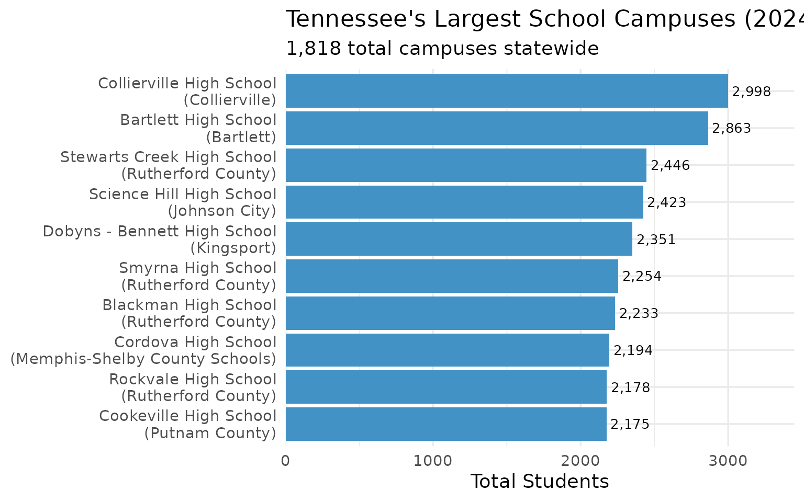
9. 15% of Tennessee students receive special education services
Over 145,000 students receive special education services statewide.
sped_data <- enr_2024 %>%
filter(is_state, grade_level == "TOTAL", subgroup == "special_ed") %>%
select(n_students)
stopifnot(nrow(sped_data) > 0)
sped_pct <- sped_data$n_students / total_students * 100
cat("Special Education:", scales::comma(sped_data$n_students),
"(", round(sped_pct, 1), "% of total enrollment)\n")
#> Special Education: 145,761 ( 15 % of total enrollment)
sped_by_district <- enr_2024 %>%
filter(is_district, grade_level == "TOTAL", subgroup == "special_ed") %>%
left_join(
enr_2024 %>%
filter(is_district, grade_level == "TOTAL", subgroup == "total_enrollment") %>%
select(district_id, total = n_students),
by = "district_id"
) %>%
mutate(pct = n_students / total * 100) %>%
filter(total > 10000) %>%
arrange(desc(pct)) %>%
head(10) %>%
select(district_name, n_students, pct)
stopifnot(nrow(sped_by_district) > 0)
sped_by_district %>% print()
#> district_name n_students pct
#> 1 Montgomery County 6183 16.00114
#> 2 Knox County 9414 15.99986
#> 3 Robertson County 1772 15.99567
#> 4 Maury County 1908 15.00118
#> 5 Sumner County 4528 15.00083
#> 6 Sevier County 2122 15.00071
#> 7 Putnam County 1691 15.00044
#> 8 Madison County 1788 14.99748
#> 9 Bradley County 1407 14.00139
#> 10 Metro Nashville Public Schools 10827 14.00031
ggplot(sped_by_district, aes(x = pct, y = reorder(district_name, pct))) +
geom_col(fill = "#807DBA") +
geom_text(aes(label = paste0(round(pct, 1), "%")), hjust = -0.1, size = 3.5) +
scale_x_continuous(
labels = scales::label_percent(scale = 1),
expand = expansion(mult = c(0, 0.15))
) +
labs(
title = "Districts with Highest Special Education Rates",
subtitle = "Percent of students receiving special education services (districts >10K students)",
x = "Special Education (%)",
y = NULL
)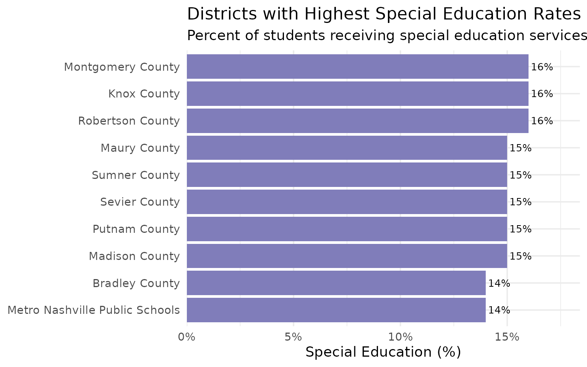
10. Nearly 1 in 3 Tennessee students is economically disadvantaged
About 29% of all students statewide qualify as economically disadvantaged.
econ_data <- enr_2024 %>%
filter(is_state, grade_level == "TOTAL", subgroup == "econ_disadv") %>%
select(n_students)
stopifnot(nrow(econ_data) > 0)
econ_pct <- econ_data$n_students / total_students * 100
cat("Economically Disadvantaged:", scales::comma(econ_data$n_students),
"(", round(econ_pct, 1), "% of total enrollment)\n")
#> Economically Disadvantaged: 281,805 ( 29 % of total enrollment)
econ_comparison <- data.frame(
category = c("Economically Disadvantaged", "Not Economically Disadvantaged"),
n_students = c(econ_data$n_students, total_students - econ_data$n_students)
) %>%
mutate(pct = n_students / sum(n_students) * 100)
econ_comparison %>% print()
#> category n_students pct
#> 1 Economically Disadvantaged 281805 29.00001
#> 2 Not Economically Disadvantaged 689936 70.99999
ggplot(econ_comparison, aes(x = "", y = n_students, fill = category)) +
geom_col(width = 1) +
coord_polar(theta = "y") +
geom_text(
aes(label = paste0(round(pct, 1), "%")),
position = position_stack(vjust = 0.5),
color = "white",
size = 6
) +
scale_fill_manual(values = c(
"Economically Disadvantaged" = "#EF6548",
"Not Economically Disadvantaged" = "#41AB5D"
)) +
labs(
title = "Economic Status of Tennessee Public School Students (2024)",
subtitle = "About 29% of students qualify as economically disadvantaged",
fill = NULL
) +
theme_void() +
theme(legend.position = "bottom")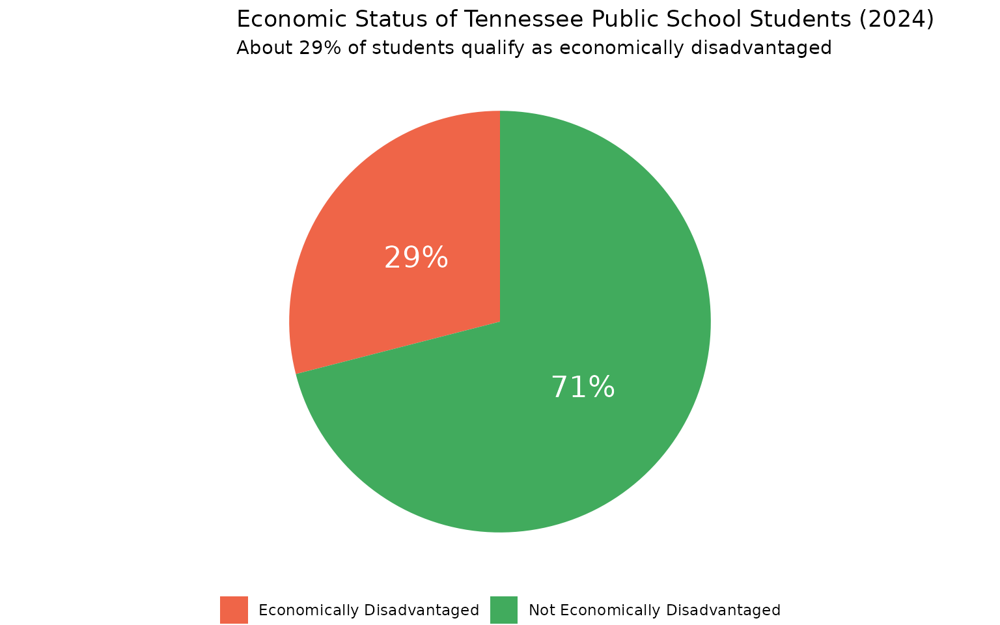
11. Nashville is a majority-minority district – the state is not
Metro Nashville Public Schools is 38% Black, 34% Hispanic, and 24% White – a dramatic contrast with the 58% White statewide average.
nashville <- enr_2024 %>%
filter(is_district, grade_level == "TOTAL",
grepl("Metro Nashville", district_name),
subgroup %in% c("white", "black", "hispanic", "asian")) %>%
select(subgroup, n_students) %>%
mutate(pct = n_students / sum(n_students) * 100,
area = "Metro Nashville")
stopifnot(nrow(nashville) == 4)
state_demo <- enr_2024 %>%
filter(is_state, grade_level == "TOTAL",
subgroup %in% c("white", "black", "hispanic", "asian")) %>%
select(subgroup, n_students) %>%
mutate(pct = n_students / sum(n_students) * 100,
area = "Tennessee State")
comparison <- bind_rows(nashville, state_demo)
comparison
#> subgroup n_students pct area
#> 1 white 18560 23.999793 Metro Nashville
#> 2 black 29387 38.000103 Metro Nashville
#> 3 hispanic 26294 34.000569 Metro Nashville
#> 4 asian 3093 3.999534 Metro Nashville
#> 5 white 563610 58.000023 Tennessee State
#> 6 black 233218 24.000016 Tennessee State
#> 7 hispanic 145761 14.999985 Tennessee State
#> 8 asian 29152 2.999976 Tennessee State
comparison %>% print()
#> subgroup n_students pct area
#> 1 white 18560 23.999793 Metro Nashville
#> 2 black 29387 38.000103 Metro Nashville
#> 3 hispanic 26294 34.000569 Metro Nashville
#> 4 asian 3093 3.999534 Metro Nashville
#> 5 white 563610 58.000023 Tennessee State
#> 6 black 233218 24.000016 Tennessee State
#> 7 hispanic 145761 14.999985 Tennessee State
#> 8 asian 29152 2.999976 Tennessee State
ggplot(comparison, aes(x = pct, y = subgroup, fill = area)) +
geom_col(position = "dodge", width = 0.7) +
geom_text(aes(label = paste0(round(pct, 1), "%")),
position = position_dodge(width = 0.7),
hjust = -0.1, size = 3) +
scale_fill_manual(values = c("Metro Nashville" = "#41AB5D", "Tennessee State" = "#4292C6")) +
scale_x_continuous(expand = expansion(mult = c(0, 0.2))) +
labs(
title = "Metro Nashville vs Tennessee Demographics (2024)",
subtitle = "Nashville is majority-minority; the state is 58% White",
x = "Percent of Students",
y = NULL,
fill = NULL
) +
theme(legend.position = "bottom")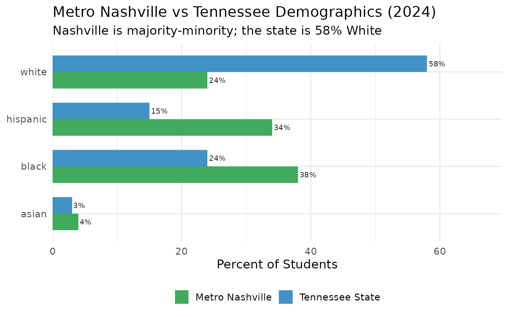
12. Knox County is East Tennessee’s education hub
Knoxville’s district accounts for 37% of all students in the region’s major districts.
knox <- enr_2024 %>%
filter(is_district, subgroup == "total_enrollment", grade_level == "TOTAL",
grepl("Knox", district_name)) %>%
select(district_name, n_students)
stopifnot(nrow(knox) > 0)
knox
#> district_name n_students
#> 1 Knox County 58838
east_tn_total <- enr_2024 %>%
filter(is_district, subgroup == "total_enrollment", grade_level == "TOTAL",
grepl("Knox|Hamilton|Blount|Anderson|Sevier|Washington|Sullivan|Bradley", district_name)) %>%
summarize(total = sum(n_students, na.rm = TRUE))
cat("Knox County share of major East TN districts:",
round(knox$n_students / east_tn_total$total * 100, 1), "%\n")
#> Knox County share of major East TN districts: 36.9 %
east_tn_districts <- enr_2024 %>%
filter(is_district, subgroup == "total_enrollment", grade_level == "TOTAL",
grepl("Knox|Hamilton|Blount|Anderson|Sevier|Washington|Sullivan|Bradley", district_name)) %>%
select(district_name, n_students) %>%
arrange(desc(n_students))
stopifnot(nrow(east_tn_districts) > 0)
east_tn_districts %>% print()
#> district_name n_students
#> 1 Knox County 58838
#> 2 Hamilton County 44765
#> 3 Sevier County 14146
#> 4 Bradley County 10049
#> 5 Blount County 9996
#> 6 Washington County 7950
#> 7 Sullivan County 7839
#> 8 Anderson County 5878
ggplot(east_tn_districts, aes(x = n_students / 1000, y = reorder(district_name, n_students))) +
geom_col(fill = "#4292C6") +
geom_text(aes(label = scales::comma(n_students)), hjust = -0.1, size = 3.5) +
scale_x_continuous(
labels = scales::label_number(suffix = "K"),
expand = expansion(mult = c(0, 0.15))
) +
labs(
title = "East Tennessee Major Districts (2024)",
subtitle = "Knox County dominates the region with 37% of students",
x = "Students (thousands)",
y = NULL
)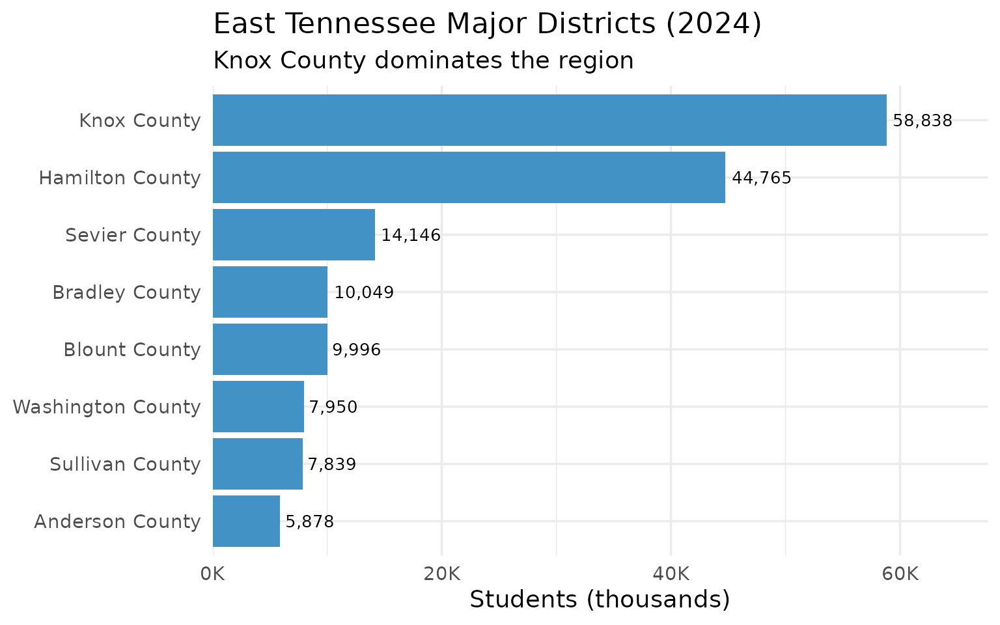
13. Tennessee has 147 school districts with a huge size gap
The median district has just 2,961 students – less than half the 6,610 average – showing extreme concentration.
district_count <- enr_2024 %>%
filter(is_district, subgroup == "total_enrollment", grade_level == "TOTAL") %>%
summarize(
n_districts = n(),
total_students = sum(n_students, na.rm = TRUE),
avg_size = mean(n_students, na.rm = TRUE),
median_size = median(n_students, na.rm = TRUE)
)
stopifnot(district_count$n_districts > 0)
district_count
#> n_districts total_students avg_size median_size
#> 1 147 971735 6610.442 2961
cat("Average district size:", scales::comma(round(district_count$avg_size)), "students\n")
#> Average district size: 6,610 students
cat("Median district size:", scales::comma(round(district_count$median_size)), "students\n")
#> Median district size: 2,961 students
district_sizes <- enr_2024 %>%
filter(is_district, subgroup == "total_enrollment", grade_level == "TOTAL") %>%
mutate(size_category = case_when(
n_students < 1000 ~ "Small (<1K)",
n_students < 5000 ~ "Medium (1-5K)",
n_students < 10000 ~ "Large (5-10K)",
n_students < 25000 ~ "Very Large (10-25K)",
TRUE ~ "Mega (25K+)"
)) %>%
count(size_category) %>%
mutate(size_category = factor(size_category, levels = c("Small (<1K)", "Medium (1-5K)",
"Large (5-10K)", "Very Large (10-25K)",
"Mega (25K+)")))
stopifnot(nrow(district_sizes) > 0)
district_sizes %>% print()
#> size_category n
#> 1 Large (5-10K) 26
#> 2 Medium (1-5K) 81
#> 3 Mega (25K+) 8
#> 4 Small (<1K) 25
#> 5 Very Large (10-25K) 7
ggplot(district_sizes, aes(x = n, y = size_category)) +
geom_col(fill = "#807DBA") +
geom_text(aes(label = n), hjust = -0.2, size = 4) +
scale_x_continuous(expand = expansion(mult = c(0, 0.15))) +
labs(
title = "Distribution of Tennessee District Sizes (2024)",
subtitle = "Most districts are small to medium-sized",
x = "Number of Districts",
y = NULL
)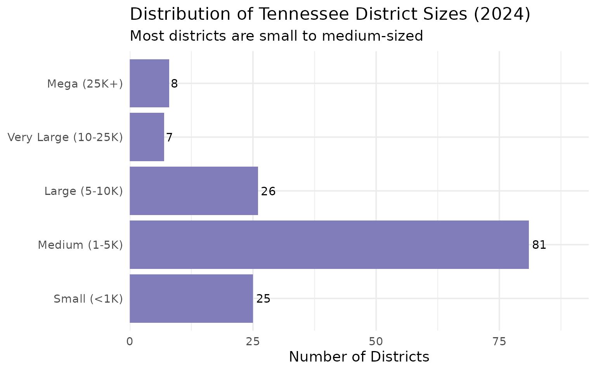
14. Tennessee runs an Achievement School District and a state charter commission
Tennessee’s ASD and Public Charter School Commission together serve over 9,000 students as state-run alternatives to traditional districts.
special_districts <- enr_2024 %>%
filter(is_district, subgroup == "total_enrollment", grade_level == "TOTAL",
grepl("Achievement School District|Charter School Commission", district_name)) %>%
select(district_name, n_students)
stopifnot(nrow(special_districts) > 0)
special_districts
#> district_name n_students
#> 1 Achievement School District 4456
#> 2 Tennessee Public Charter School Commission 4796
cat("Combined ASD + Charter Commission enrollment:",
sum(special_districts$n_students), "students\n")
#> Combined ASD + Charter Commission enrollment: 9252 students
cat("Share of state total:",
round(sum(special_districts$n_students) / total_students * 100, 2), "%\n")
#> Share of state total: 0.95 %
# Compare ASD and Charter Commission to small/mid traditional districts
comparison_districts <- enr_2024 %>%
filter(is_district, subgroup == "total_enrollment", grade_level == "TOTAL",
grepl("Achievement|Charter School Commission|Putnam|Madison|Maury|Robertson|Bradley", district_name)) %>%
select(district_name, n_students) %>%
arrange(desc(n_students))
stopifnot(nrow(comparison_districts) > 0)
comparison_districts %>% print()
#> district_name n_students
#> 1 Maury County 12719
#> 2 Madison County 11922
#> 3 Putnam County 11273
#> 4 Robertson County 11078
#> 5 Bradley County 10049
#> 6 Tennessee Public Charter School Commission 4796
#> 7 Achievement School District 4456
ggplot(comparison_districts, aes(x = n_students / 1000, y = reorder(district_name, n_students))) +
geom_col(aes(fill = grepl("Achievement|Charter", district_name)), show.legend = FALSE) +
geom_text(aes(label = scales::comma(n_students)), hjust = -0.1, size = 3.5) +
scale_fill_manual(values = c("TRUE" = "#EF6548", "FALSE" = "#4292C6")) +
scale_x_continuous(
labels = scales::label_number(suffix = "K"),
expand = expansion(mult = c(0, 0.15))
) +
labs(
title = "State-Run vs Traditional Districts (2024)",
subtitle = "Achievement School District and Charter Commission (red) vs traditional districts",
x = "Students (thousands)",
y = NULL
)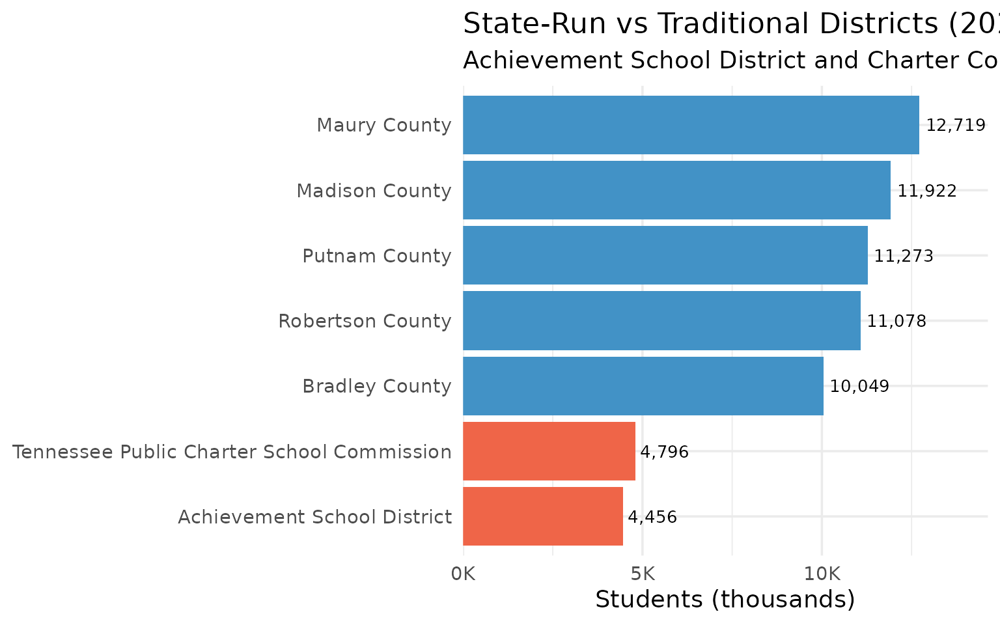
15. Tennessee’s smallest districts serve fewer than 200 students
The state’s tiniest districts include specialized schools and rural communities.
small_districts <- enr_2024 %>%
filter(is_district, subgroup == "total_enrollment", grade_level == "TOTAL",
n_students < 2000) %>%
arrange(n_students) %>%
head(10) %>%
select(district_name, n_students)
stopifnot(nrow(small_districts) > 0)
small_districts
#> district_name n_students
#> 1 West Tennessee School for the Deaf 25
#> 2 Tennessee School for Blind 113
#> 3 Tennessee Schools for the Deaf 127
#> 4 Richard City 187
#> 5 South Carroll 319
#> 6 Etowah 328
#> 7 Bells 369
#> 8 Alvin C. York Agricultural Institute 477
#> 9 Alamo 530
#> 10 Pickett County 564
cat("Districts with fewer than 2,000 students:",
sum(enr_2024$is_district & enr_2024$subgroup == "total_enrollment" &
enr_2024$grade_level == "TOTAL" & enr_2024$n_students < 2000, na.rm = TRUE), "\n")
#> Districts with fewer than 2,000 students: 50
small_districts %>% print()
#> district_name n_students
#> 1 West Tennessee School for the Deaf 25
#> 2 Tennessee School for Blind 113
#> 3 Tennessee Schools for the Deaf 127
#> 4 Richard City 187
#> 5 South Carroll 319
#> 6 Etowah 328
#> 7 Bells 369
#> 8 Alvin C. York Agricultural Institute 477
#> 9 Alamo 530
#> 10 Pickett County 564
ggplot(small_districts, aes(x = n_students, y = reorder(district_name, n_students))) +
geom_col(fill = "#EF6548") +
geom_text(aes(label = scales::comma(n_students)), hjust = -0.1, size = 3.5) +
scale_x_continuous(expand = expansion(mult = c(0, 0.2))) +
labs(
title = "Tennessee's Smallest School Districts (2024)",
subtitle = "Includes specialized state schools and rural communities",
x = "Total Students",
y = NULL
)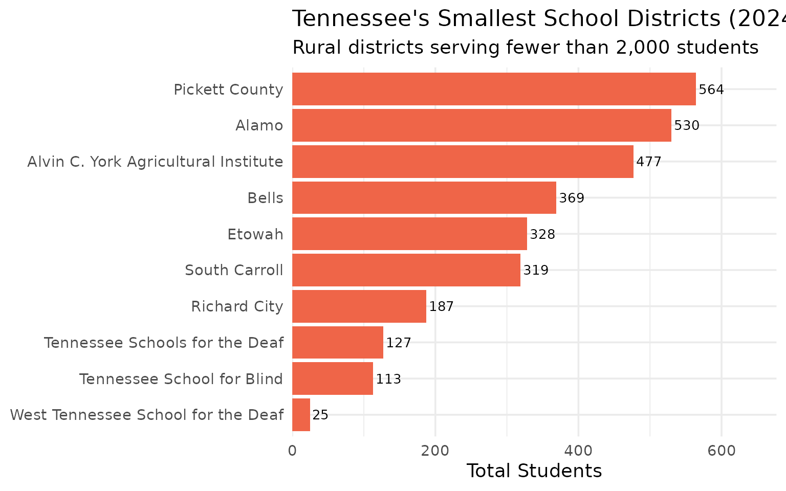
Explore the data yourself
library(tnschooldata)
# Fetch 2024 data
enr <- fetch_enr(2024, use_cache = TRUE)
# State totals
enr %>%
filter(is_state, subgroup == "total_enrollment", grade_level == "TOTAL")
# Your district
enr %>%
filter(grepl("Knox", district_name),
subgroup == "total_enrollment",
grade_level == "TOTAL")See the quickstart guide for more examples.
Session Info
sessionInfo()
#> R version 4.5.2 (2025-10-31)
#> Platform: x86_64-pc-linux-gnu
#> Running under: Ubuntu 24.04.3 LTS
#>
#> Matrix products: default
#> BLAS: /usr/lib/x86_64-linux-gnu/openblas-pthread/libblas.so.3
#> LAPACK: /usr/lib/x86_64-linux-gnu/openblas-pthread/libopenblasp-r0.3.26.so; LAPACK version 3.12.0
#>
#> locale:
#> [1] LC_CTYPE=C.UTF-8 LC_NUMERIC=C LC_TIME=C.UTF-8
#> [4] LC_COLLATE=C.UTF-8 LC_MONETARY=C.UTF-8 LC_MESSAGES=C.UTF-8
#> [7] LC_PAPER=C.UTF-8 LC_NAME=C LC_ADDRESS=C
#> [10] LC_TELEPHONE=C LC_MEASUREMENT=C.UTF-8 LC_IDENTIFICATION=C
#>
#> time zone: UTC
#> tzcode source: system (glibc)
#>
#> attached base packages:
#> [1] stats graphics grDevices utils datasets methods base
#>
#> other attached packages:
#> [1] ggplot2_4.0.2 tidyr_1.3.2 dplyr_1.2.0 tnschooldata_0.1.0
#> [5] testthat_3.3.2
#>
#> loaded via a namespace (and not attached):
#> [1] gtable_0.3.6 jsonlite_2.0.0 compiler_4.5.2 brio_1.1.5
#> [5] tidyselect_1.2.1 jquerylib_0.1.4 systemfonts_1.3.1 scales_1.4.0
#> [9] textshaping_1.0.4 readxl_1.4.5 yaml_2.3.12 fastmap_1.2.0
#> [13] R6_2.6.1 labeling_0.4.3 generics_0.1.4 curl_7.0.0
#> [17] knitr_1.51 tibble_3.3.1 desc_1.4.3 bslib_0.10.0
#> [21] pillar_1.11.1 RColorBrewer_1.1-3 rlang_1.1.7 utf8_1.2.6
#> [25] cachem_1.1.0 xfun_0.56 S7_0.2.1 fs_1.6.6
#> [29] sass_0.4.10 cli_3.6.5 withr_3.0.2 pkgdown_2.2.0
#> [33] magrittr_2.0.4 digest_0.6.39 grid_4.5.2 rappdirs_0.3.4
#> [37] lifecycle_1.0.5 vctrs_0.7.1 evaluate_1.0.5 glue_1.8.0
#> [41] cellranger_1.1.0 farver_2.1.2 codetools_0.2-20 ragg_1.5.0
#> [45] rmarkdown_2.30 purrr_1.2.1 tools_4.5.2 pkgconfig_2.0.3
#> [49] htmltools_0.5.9